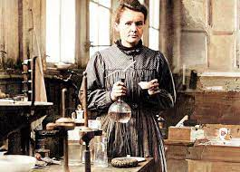

Otra ciencia que me llama la atencion la quimica porque, me llama mucho la atencion todo lo que nos rodea, la materia, como es su funcionamiento y que es lo compone.

Por ultimo, a pesar de que en ocasiones se me complica demasiado, me gustaria estudiar fisica, aunque no fisica como tal, si no una rama que tiene que ver con esta la cual es astronomia, ya que todo lo que tiene que ver con el espacio me causa mucha curiosidad. O tal vez estudie astrobiologia, algo que acabe de descubrir hace poco y me esta causando mucho interes.
Espero estudiar en alguna universidad en el extranjero y si no es posible, me gustaria estudiar en la Universidad de Antioquia.
Aun tengo un poco de tiempo para decidir, y quien sabe, tal vez en un futuro termine decidiendome por algo que no tenia nada que ver conn ciencias exactas, pero por el momento esto es lo que me llama la atencion, a pesar de que casi toda mi familia diga que me voy a morir de hambre si estudio eso, pero eso no es lo que importa, porque es lo que a mi me apasiona.